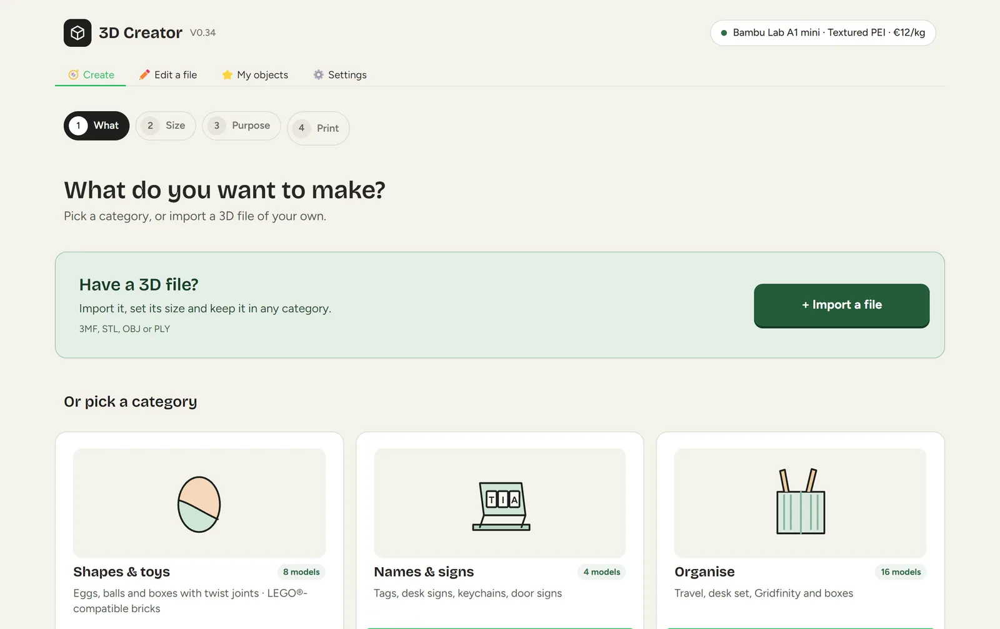
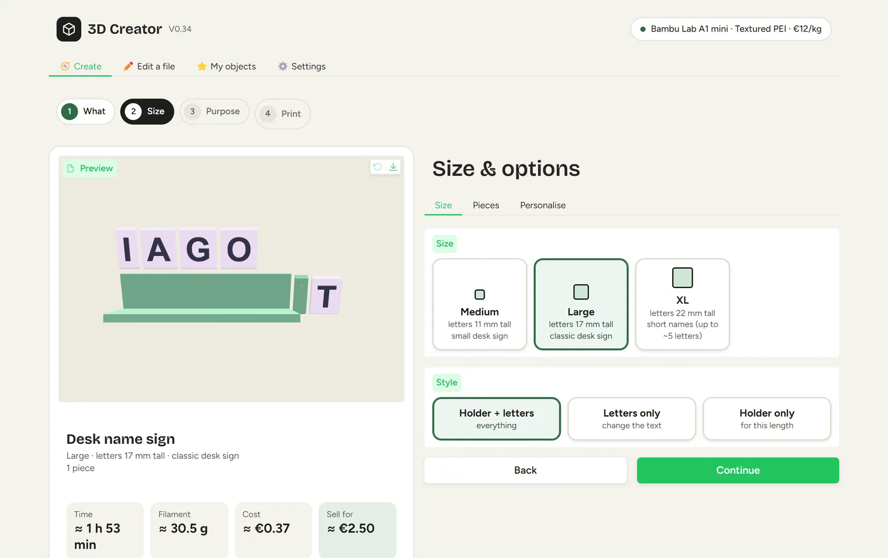
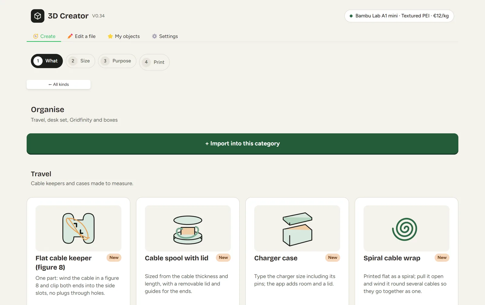
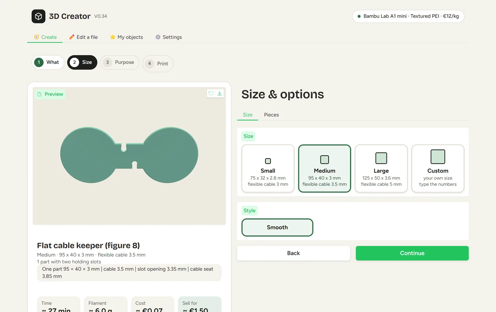

Organise
Import models and group projects into categories.
3D PRINTING · IN DEVELOPMENT
From a model to a more organised print workflow.
3D Creator is a desktop project for organising 3D models and preparing them for a 3D-printing workflow.
Import models and group projects into categories.
Scale a model proportionally to a chosen height.
Explore previews and workflows connected to a slicer.
Screenshots
Screens from a clean install, with no personal projects loaded.




This project is still being refined. A public download is not available yet.